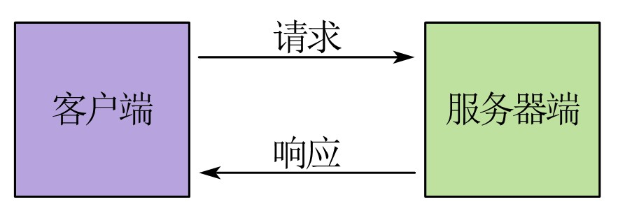

简介
1 后端开发简介¶

1.1 什么是后端开发？¶
后端开发（Back-End Development，也称服务端开发、服务器端开发等）是创建完整可运行的Web应用服务端程序（服务端程序和资源合称为后端，即在服务器上运行的、不涉及用户界面的部分）的过程，是Web应用程序开发的一部分。后端开发者使用Java、Golang、Python等语言及其衍生的各种框架、库和解决方案来实现Web应用程序的核心业务逻辑，并向外提供特定的API，使得Web应用能够高效、安全、稳定地运行。
1.2 说人话¶
好吧，如果你看了定义仍然很懵，那我就用一些非常易于理解的表达形式来说一说“什么是后端开发”。虽然这些表述可能并不严谨或完全正确，但是我相信这样一定能使你明白什么是后端开发。
这里我们拿前端来类比一下，因为大家应该都已经对“什么是前端开发”、“什么是前端”有一定了解了：
- 前端就相当于我们的肉体，后端就相当于我们的灵魂和思想；
- 前端是如何操作游戏，后端是具体的游戏规则；
- 前端是用户能看到的，后端是用户看不到的；
- 前端是跑在浏览器上的，后端是跑在服务器上的；
- 前端采集用户的输入，后端处理用户的输入；
- 前端开发是写代码给用户看，后端开发是写代码给服务器看。
是不是这样一讲就明白了？那我们接着往下看。
1.3 具体职责¶
实现Web应用程序的实际业务逻辑。 即：实现Web应用程序的具体功能（如注册、发表和查询信息等）或Web应用程序在服务端执行的具体操作。这是后端开发这项工作的主要内容；
使用API和创建API。 后端需要向前端提供前端所需的数据，也需要使用第三方API来完成业务逻辑（如完成某个功能需要通过API调用其他应用、在使用框架进行开发时需要使用语言和框架的API、操作数据库时需要使用数据库或ORM框架的API等）。因为在后端开发的过程中经常需要与API打交道，所以有人也把后端开发称为“API开发”，就像有些人将前端称为“GUI开发”一样；
- API（Application Programming Interface，应用程序编程接口）是计算机软件组件之间进行通信的一种约定，它定义了一种双方都能理解的接口，使得各个组件之间可以互相调用。
优化。 在用户量达到一定程度后，就会出现诸如响应慢等各种问题（不理解的话想想你们大学的选课系统）；同时，随着代码行数的增多，许多架构上的缺陷可能也会随之暴露出来，如代码逻辑混乱、模块划分不正确等。此时就需要后端开发人员对Web应用程序进行优化，如重构、分布式部署、优化业务逻辑、单体应用拆分成微服务等；
架构设计。 虽然一般只有高级的后端开发人员和架构师才需要关注架构问题，但是架构设计是后端开发中非常重要的一环，因为它决定了如何组织代码、某个模块负责解决什么样的问题、系统的扩展性和可维护性如何、业务逻辑如何进行组织等，也会一定程度上影响到业务逻辑的具体实现（比如微服务和单体架构这两种架构下，同一种业务逻辑的实现可能完全不同）。
1.4 什么样的人适合做后端？¶
- 讨厌写用户界面或与用户界面打交道的人。有很多人是因为讨厌写界面（尤其是CSS这种反人类的东西）才来做后端开发的。这里没有界面，讨厌与用户界面打交道的人不妨尝试一下后端开发；
- 细心的人。后端开发实际上比前端开发更需要细心。就如前文所述，后端是Web应用程序的“灵魂”，后端开发中的许多问题都决定着Web应用的“生死存亡”，尤其是数据校验、多线程/多进程、锁、异步编程、事务/分布式事务、与第三方系统的交互等，这些问题有非常非常多的细节，且既复杂又非常重要，一旦在细节上出现问题（如数据校验不完全或加锁解锁的逻辑出现错误），轻则出现错误的数据或业务逻辑不能正常运行，重则直接导致整个Web应用挂掉或出现安全问题（如数据校验不完全导致的文件上传漏洞、函数使用错误导致的远程命令执行漏洞等）。所以如果你想从事后端开发，那足够细心绝对是一个必要的条件；
- 喜欢与机器打交道多于与人打交道的人。与前端开发是“写代码给人看”的不同，后端开发是“写代码给服务器看”（或者说给前端/第三方系统看）的。虽然这两个说法都不太严谨，但是后端开发更多的就是与服务器打交道（如降低资源使用率、提高Web应用程序的运行效率等等），而不是与人打交道（如提高页面的美观程度、思考用户的使用逻辑和心理等等）；
- 想编写实际的业务逻辑的人，或喜欢算法和逻辑的人。前端的逻辑更多的是交互逻辑，如点击某个按钮应该弹出什么窗口、怎么把数据渲染成用户想要看到的页面等，而后端的逻辑更多的是实际的业务逻辑，如完成某个功能需要怎样做、请求某个API应该返回什么样的数据等。如果你和我一样写前端时因为总是接触不到实际的业务逻辑而感到不爽，那么大后端欢迎你；
- 好奇心强、自学能力强且有终身学习的觉悟的人，或者喜欢钻研技术的人，或喜欢充满挑战性的工作的人。后端看似简单，实际上技术含量是非常高的。就如前面所说，现在的后端可不仅仅是CRUD，而是随着互联网和云计算技术的发展而不断改变，Web应用程序在需求不断变化的过程中功能变得越来越强，架构变得越来越复杂，对性能的考验也越来越严峻，技术含量自然也就越来越高。作为一名后端开发工程师，需要有不断学习新技术的觉悟，还需要有一定的自学能力，因为不是什么技术都有人教你的，在学习和使用最新技术时对着英文文档啃是常有的事；
- 对系统架构感兴趣或想要成为架构师的人。虽然不可否认的是由于前端至今没有“一统天下”的解决方案而使得前端开发人员经常会比后端开发人员更早地接触到架构的部分，但是传统意义上的前端说白了也就是浏览器那“一亩三分地”（前端同学别喷我，这里仅仅说的是传统的Web前端，“大前端”是不算的哈），而后端技术的天花板则是“地球上人类的数量”（接触过高并发的同学看到这句话应该很有感触吧，哈哈），而核心的业务逻辑往往存在于后端，后端的优化压力往往比前端更大，这就使得初级的后端开发者在进行开发时需要对系统的架构有一定了解、高级的后端开发者需要经常思考系统的架构设计的问题，这也使得后端开发者更容易成长为架构师；
- 沉得住气的人。除了有第5条中提到的“后端的技术含量实际上是非常高的”这一原因之外，还有一个原因就是后端并不是“所见即所得”的，经常需要你编写几十甚至几百行代码、做无数复杂的配置才能把Web应用运行起来（注意，是运行，写业务逻辑的话需要更多代码），另一个原因是后端开发的门槛比前端要高——你至少得掌握一门语言和这门语言在后端开发方面的一些框架或库才能开始开发。所以，后端开发者必须要沉得住气，不能因为写几行代码看不到任何效果就想放弃；